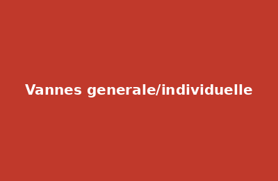

Résidences La V.
Espace copropriétaires privé
Espace copropriétaires privé
La résidence dispose d'un réseau d'eau du canal utilisé pour l'arrosage. Ce réseau est distinct de l'eau potable et non potable.
Suivez ces étapes lors du relevé demandé par le bureau en début et fin de saison.
Votre compteur individuel se situe [emplacement à préciser — ex : regard au sol devant votre maison, côté jardin].
Relevez les chiffres noirs (m³) — ignorez les chiffres rouges (décimales). Notez le relevé avec la date.
Envoyez votre relevé au bureau via le formulaire de contact ou par email à [adresse@placeholder.fr] avec : votre numéro de lot, l'index relevé, la date.
Ne forcez pas. Signalez-le au bureau. Un membre du bureau interviendra avec vous.
Le remplacement est effectué uniquement par le bureau ou un prestataire mandaté.
Avant tout remplacement, fermer la vanne individuelle en amont du compteur (quart de tour vers la droite = fermé).
Dévisser les deux raccords union. Poser le nouveau compteur dans le sens du flux (flèche gravée sur le corps du compteur).
Rouvrir lentement la vanne. Vérifier l'absence de fuite sur les raccords. Relever l'index à zéro et le communiquer au bureau.

La vanne générale se situe [emplacement à compléter par le bureau].
⚠️ Ne jamais fermer la vanne générale sans en informer le bureau, sauf urgence absolue.